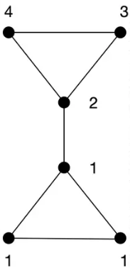
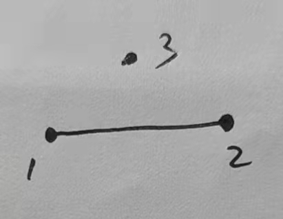

\[ \frac{\sum_{vw}{A_{vw}}\delta \left( c_v,c_w \right)}{\sum_{vw}{A_{vw}}}=\frac{1}{2m}\sum_{vw}{A_{vw}}\delta \left( c_v,c_w \right) \] 其中有： \[ \delta \left( c_v,c_w \right) =\begin{cases} 1 , c_v=c_w\\ 0 , otherwise\\ \end{cases} \] 这个公式的含义是全部社区内部边的2倍占总的节点度之和的比例，它用来衡量整个网络社区划分的好坏。其值越高说明社区内部边越密集，社区外即社区之间的连边越稀疏；这说明我们的划分越好越理想。
但是它有一个缺点是：当所有的节点同属于一个社区的时候，其值为1.这导致了任何社区划分下的目标函数的取值都没法超越它。因此这个衡量方式就有问题存在。显然1个社区的划分并不是我们想要的结果。
在原来提出的目标函数上，论文提出了一个节点对之间存边的概率期望：
\[ \frac{k_vk_w}{2m} \]
它的构造基于整个网络数据中节点边的连接是随机产生的。
我们给出它的proof，引入2个示性函数：
\[ I_{i}^{\left( v,w \right)}=\begin{cases} 1 , ith\text{与节点}w\text{相连}\\ 0 , otherwise\\\end{cases} \]
以及
\[ J_{\left( v,w \right)}=\begin{cases} 1 , \text{节点}v\text{与节点}w\text{相连}\\ 0 \text{，} otherwise\\\end{cases} \]
那么易想到节点v的ith边与节点w相连的组合共有节点w度那么多，而ith与所有节点相连的组合共有2m，则有：
\[ P\left( I_{i}^{\left( v,w \right)}=1 \right) =\frac{k_w}{2m}\,\,; 2m=k_1+k_2+\cdots +k_{all} \]
因此有：
\[ P\left( J_{\left( v,w \right)}=1 \right) =\sum_i{P\left( I_{i}^{\left( v,w \right)}=1 \right)}=\sum_i^{k_v}{\frac{k_w}{2m}}=\frac{k_vk_w}{2m} \]
有了上述的概率期望，我们给出修正的目标函数-模块度Q：
\[ Q=\frac{1}{2m}\sum_{vw}{\left[ A_{vw}-\frac{k_vk_w}{2m} \right]}\delta \left( c_v,c_w \right) =\sum_i{\left( e_{ii}-a_{i}^{2} \right)} \]
其中模块度的取值范围为[-1/2,1); Q越高说明我们的社区划分越理想。
上面公式定义有定义了3个式子：
1.节点度：\(k_v=\sum_w{A_{vw}}\)
2.社区间连边占总度和比例：\(e_{ij}=\frac{1}{2m}\sum_{vw}{A_{vw}}\delta \left( c_v,i \right) \delta \left( c_w,j \right)\)
3.社区内部节点度和占总度和比例：\(a_i=\frac{1}{2m}\sum_v{k_v}\delta \left( c_v,i \right)\)
我们给出取值范围的证明：首先是下限-1/2；这是基于考虑到网络中每个节点的度达到最大时的情况，有以下的社区邻接矩阵：
\[ e=\left( \begin{matrix}{} 0& 1& \cdots& 1\\ 1& 0& \cdots& 1\\ \vdots& 1& \ddots& \vdots\\ 1& 1& \cdots& 0\\\end{matrix} \right) _{n\times n} \]
此时的2m=n(n-1) ; \(a_i\)= \(\frac{n-1}{n\left( n-1 \right)}\) .有：\(Q=\sum_i{\left( e_{ii}-a_{i}^{2} \right)}=0-\left( \frac{n-1}{n\left( n-1 \right)} \right) ^2\times n=-\frac{1}{n}\geqslant -\frac{1}{2}\,\,; n\geqslant 2\)
针对上限情况，考虑如下社区：
\[ \begin{array}{c} \bullet\\ \updownarrow\\ \bullet\\ 1\\\end{array}\begin{array}{c} \bullet\\ \updownarrow\\ \bullet\\ 2\\\end{array}\cdots \begin{array}{c} \bullet\\ \updownarrow\\ \bullet\\ n\\\end{array} \]
那么它的邻接矩阵为：
\[ e=\left[ \begin{matrix}{} 2& 0& \cdots& 0\\ 0& 2& \cdots& 0\\ \vdots& 0& \ddots& \vdots\\ 0& 0& \cdots& 2\\\end{matrix} \right] _{n\times n} \]
因此有： \(Q=\frac{2}{2n}\times n-\left( \frac{2}{2n} \right) ^2\times n=1-\frac{1}{n}<1\)

给出上面例子的邻接矩阵\(A_{ij}^{'}=2me_{ij}\)
\[ e=\left[ \begin{matrix}{} 6& 1& 0& 0\\ 1& 0& 1& 1\\ 0& 1& 0& 1\\ 0& 1& 1& 0\\\end{matrix} \right] \]
于是计算\(Q=\frac{6}{2\times 7}+0-\left( \frac{7}{2\times 7} \right) ^2-2\times \left( \frac{2}{2\times 7} \right) ^2-\left( \frac{3}{2\times 7} \right) ^2=0.0918367\)
假设社区1和社区2合并，邻接矩阵改为：
\[ e=\left[ \begin{matrix}{} 8& 1& 1\\ 1& 0& 1\\ 1& 1& 0\\\end{matrix} \right] \]
运用相同的算法可以求出Q值。
论文最初设定，把每一个节点单独的看作一个社区开始合并，这样给出最开始的公式：
\[ \Delta Q_{ij}=\begin{cases} 1/2m-k_ik_j/(2m)^2& \,\,\mathrm{if} i,j\,\,\mathrm{are} \mathrm{connected}\\ 0& \,\,\mathrm{otherwise}\\\end{cases} \]
这个公式实际上是对2003年论文中的\(\Delta Q_{ij}\)进行了修正。实际上的\(\Delta Q_{ij}\)为：
\(\varDelta Q=2\left( e_{ij}-a_ia_j \right)\)
给出其证明：
首先假设共有n个社区，我们合并1社区和2社区并记为t社区，因此合并前的Q为：
\[ Q=\sum_{i=1}^n{\left( e_{ii}-a_{i}^{2} \right) =\sum_{j=1}^2{\left( e_{jj}-a_{j}^{2} \right) +\sum_{i=3}^n{\left( e_{ii}-a_{i}^{2} \right)}}} \]
合并后的Q为：
\[ Q'=\left( e_{tt}-a_{t}^{2} \right) +\sum_{i=3}^n{\left( e_{ii}-a_{i}^{2} \right)} \]
因此2者做差得到\(\varDelta Q\):
\[ \varDelta Q_{12}=Q'-Q=\left( e_{tt}-a_{t}^{2} \right) -\sum_{j=1}^2{\left( e_{jj}-a_{j}^{2} \right)} \]
其中易知道\(e_{tt}=e_{11}+e_{22}+2e_{12}\)以及\(a_t=a_1+a_2\)带入上式即证。
最后再证论文中假设社区i和社区j合并后，社区k再与合并社区进行合并的对应\(\varDelta Q\)。
设i与j社区合并后记为社区t，那么有：
1.k社区同时与i，j社区相连：
\[ \varDelta Q_{kt}=\varDelta Q_{ik}+\varDelta Q_{jk} \]
实际上
\[ \,\,e_{kt}=e_{ki}+e_{kj}\,\,; a_t=a_i+a_j\\\varDelta Q_{kt}=2e_{kt}-2a_ka_t\,\,=2e_{ki}+2e_{kj}-2a_k\left( a_i+a_j \right) \\=2\left( e_{ki}-a_ka_i \right) +2\left( e_{kj}-a_ka_j \right) =\varDelta Q_{ki}+\varDelta Q_{kj}\\ \]
2.假设k社区与i社区相连但不与j社区相连，实际上依照1的证明我们有：
\[ e_{kj}=0\\\varDelta Q_{kt}=\varDelta Q_{ki}+\varDelta Q_{kj}=\varDelta Q_{ki}+2\left( e_{kj}-a_ka_j \right) =\varDelta Q_{ki}-2a_ka_j\\ \]
为了便于理解，我们给出一个具体的示例：

先算最初的Q值，其有邻接矩阵
\[ \left[ \begin{matrix}{} 0& 1& 0\\ 1& 0& 0\\ 0& 0& 0\\\end{matrix} \right] _{3\times 3} \]
所以\(Q_0=0-2\times \left( \frac{1}{2} \right) ^2=-0.5\,\,; 2m=2\)
按照论文约定给出\(\varDelta Q\)矩阵：
\[ \varDelta Q_0=\left[ \begin{matrix}{} 0& \frac{1}{4}& 0\\ \frac{1}{4}& 0& 0\\ 0& 0& 0\\\end{matrix} \right] \]
由于矩阵是对角元素全为0的对称矩阵，则只要计算右上角元素即可。矩阵元素计算如下：
1.\(\varDelta Q_{12}=e_{12}-a_1a_2=\frac{1}{2}-\frac{1}{2}\times \frac{1}{2}=0.25\)
2.\(\varDelta Q_{13}=0\)
3.\(\varDelta Q_{23}=0\)
我们更新Q有：\(Q_1=Q_0+\varDelta Q=-0.5+\frac{1}{4}=-0.25\)
因为\(\varDelta Q\)矩阵每行最大值存于的max-heap（最大堆）中的最大值为社区1和社区2合并下的0.25。所以接着更新\(\varDelta Q\)矩阵：
\[ \varDelta Q_1=\left[ \begin{matrix}{} 0& 0\\ 0& 0\\\end{matrix} \right] \]
\(\varDelta Q\)矩阵最后只能更新到2*2矩阵就结束。这里由于\(\varDelta Q_{1'3}=0\)所以仅仅合并社区1和社区2已经是最优划分了。